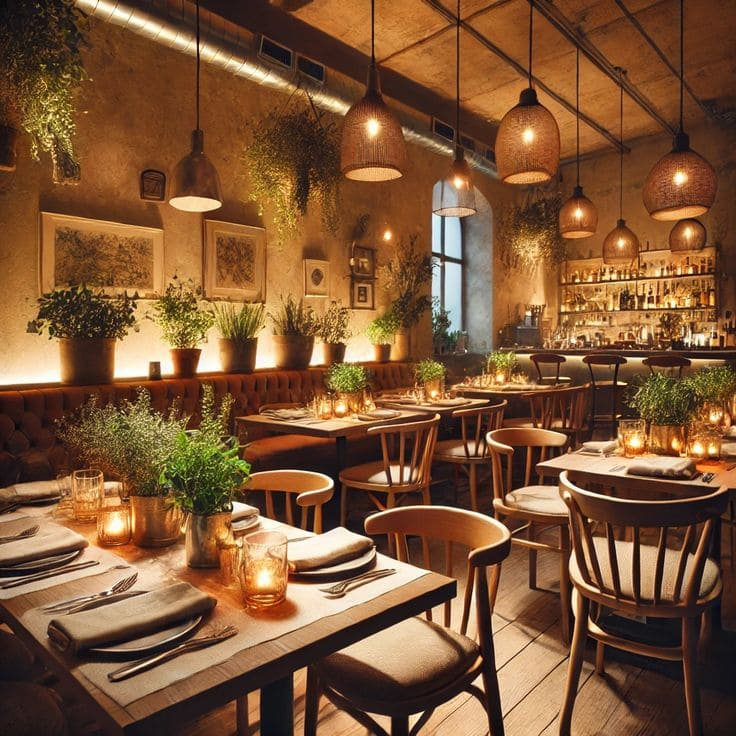

Visi
DudukYuk menjadi platform digital terdepan dan terpercaya dalam penyediaan layanan pencarian dan pemesanan tempat duduk yang efisien, inovatif, serta memberikan kemudahan dan kenyamanan bagi masyarakat di berbagai lokasi.

DudukYuk adalah platform booking restoran yang memudahkan Anda memesan tempat duduk secara online, cepat dan praktis.
Mulai BookingDudukYuk hadir untuk menjawab kebutuhan masyarakat dalam mencari dan memesan tempat duduk di restoran dengan mudah. Kami menghubungkan pengguna dengan berbagai restoran terbaik di kota, mulai dari tempat makan santai hingga restoran premium.


DudukYuk menjadi platform digital terdepan dan terpercaya dalam penyediaan layanan pencarian dan pemesanan tempat duduk yang efisien, inovatif, serta memberikan kemudahan dan kenyamanan bagi masyarakat di berbagai lokasi.
Booking mudah kapan saja di ujung jari Anda
Cek ulasan dan rating dari pengguna lain sebelum memilih restoran
Proses booking Anda aman dengan sistem pengelolaan terpercaya
Temukan restoran terdekat sesuai keinginan dan kebutuhan Anda